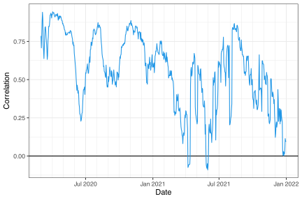
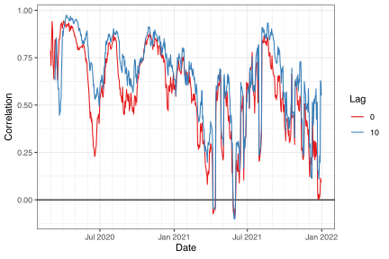
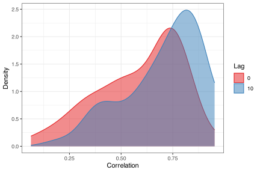
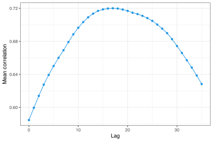

x <- covid_case_death_rates5 Correlate signals over space and time
The epiprocess package provides some simple functionality for computing lagged correlations between two signals, over space or time (or other variables), via epi_cor(). This function is really just a convenience wrapper over some basic commands: it first performs specified time shifts, then computes correlations, grouped in a specified way. In this vignette, we’ll examine correlations between state-level COVID-19 case and death rates, smoothed using 7-day trailing averages.
5.1 Correlations grouped by time
The epi_cor() function operates on an epi_df object, and it requires further specification of the variables to correlate, in its next two arguments (var1 and var2).
In general, we can specify any grouping variable (or combination of variables) for the correlation computations in a call to epi_cor(), via the cor_by argument. This potentially leads to many ways to compute correlations. There are always at least two ways to compute correlations in an epi_df: grouping by time value, and by geo value. The former is obtained via cor_by = time_value.
z1 <- epi_cor(x, case_rate, death_rate, cor_by = "time_value")Code
ggplot(z1, aes(x = time_value, y = cor)) +
geom_hline(yintercept = 0) +
geom_line(color = 4) +
scale_x_date(minor_breaks = "month", date_labels = "%b %Y") +
labs(x = "Date", y = "Correlation")
The above plot addresses the question: “on any given day, are case and death rates linearly associated, across the U.S. states?”. We might be interested in broadening this question, instead asking: “on any given day, do higher case rates tend to associate with higher death rates?”, removing the dependence on a linear relationship. The latter can be addressed using Spearman correlation, accomplished by setting method = "spearman" in the call to epi_cor(). Spearman correlation is highly robust and invariant to monotone transformations.
5.2 Lagged correlations
We might also be interested in how case rates associate with death rates in the future. Using the dt1 parameter in epi_cor(), we can lag case rates back any number of days we want, before calculating correlations. Below, we set dt1 = -10. This means that var1 = case_rate will be lagged by 10 days, so that case rates on June 1st will be correlated with death rates on June 11th. (It might also help to think of it this way: death rates on a certain day will be correlated with case rates at an offset of -10 days.)
z2 <- epi_cor(x, case_rate, death_rate, cor_by = time_value, dt1 = -10)Code
z <- rbind(
z1 %>% mutate(lag = 0),
z2 %>% mutate(lag = 10)
) %>%
mutate(lag = as.factor(lag))
ggplot(z, aes(x = time_value, y = cor)) +
geom_hline(yintercept = 0) +
geom_line(aes(color = lag)) +
scale_color_brewer(palette = "Set1") +
scale_x_date(minor_breaks = "month", date_labels = "%b %Y") +
labs(x = "Date", y = "Correlation", col = "Lag")
Note that epi_cor() takes an argument shift_by that determines the grouping to use for the time shifts. The default is geo_value, which makes sense in our problem at hand (but in another setting, we may want to group by geo value and another variable—say, age—before time shifting).
We can see that, generally, lagging the case rates back by 10 days improves the correlations, confirming case rates are better correlated with death rates 10 days from now.
5.3 Correlations grouped by state
The second option we have is to group by geo value, obtained by setting cor_by = geo_value. We’ll again look at correlations for both 0- and 10-day lagged case rates.
z1 <- epi_cor(x, case_rate, death_rate, cor_by = geo_value)
z2 <- epi_cor(x, case_rate, death_rate, cor_by = geo_value, dt1 = -10)Code
z <- rbind(
z1 %>% mutate(lag = 0),
z2 %>% mutate(lag = 10)
) %>%
mutate(lag = as.factor(lag))
ggplot(z, aes(cor)) +
geom_density(aes(fill = lag, col = lag), alpha = 0.5, bounds = c(-1, 1)) +
scale_fill_brewer(palette = "Set1") +
scale_color_brewer(palette = "Set1") +
labs(x = "Correlation", y = "Density", fill = "Lag", col = "Lag")
We can again see that, generally speaking, lagging the case rates back by 10 days improves the correlations.
5.4 More systematic lag analysis
Next we perform a more systematic investigation of the correlations over a broad range of lag values.
lags <- 0:35
z <- map(
.x = lags,
~ epi_cor(x, case_rate, death_rate, cor_by = geo_value, dt1 = -.x) %>%
mutate(lag = .x)
) %>% list_rbind()Code
z %>%
group_by(lag) %>%
summarize(mean = mean(cor, na.rm = TRUE)) %>%
ggplot(aes(x = lag, y = mean)) +
geom_line(color = 4) +
geom_point(color = 4) +
labs(x = "Lag", y = "Mean correlation")
We can see pronounced curvature in the average correlation between case and death rates (where the correlations come from grouping by geo_value) as a function of lag. The maximum occurs at a lag of somewhere around 17 days.